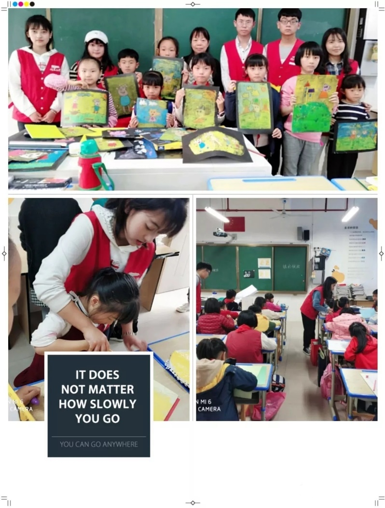

阳春三月，春暖花开，它是万物复苏的好时节。同时，作为雷锋月，它承载着更为重要的意义——传承雷锋精神。为此数计学院青年志愿者协会召集广大志愿者，开展了一系列向雷锋同志学习的活动。
3月7日下午1点，志愿者们在博约楼、逸夫楼等教学楼等地区开展了“美化校园”活动。在活动过程中，志愿者被分为5个小组分别清理5个不同区域，虽然天气十分恶劣，但大家依旧没有丝毫偷懒，每一位志愿者都认真清扫垃圾，用辛勤的汗水换来了校园的美丽。
3月10日，志愿者们再次来到了合肥市小月亮幼儿园，开展了小月亮幼儿园的支教活动。在活动前期，数计学院青年志愿者协会针对不同年龄段的小朋友，将志愿者分为3个小组，分别准备不同的教学内容。在活动过程中，志愿者们耐心讲解，认真辅导，帮助小朋友们顺利完成学习任务。
3月13日下午2点30分，数统学院青协活动部成员来到了位于蜀山区的森林公园，开展了“传承雷锋精神，美化森林公园”的志愿活动。在活动前期，青协活动部成员将志愿者们分成多个小组，以方便对森林公园进行美化。在活动过程中，志愿者们不怕脏不怕累，认真清捡垃圾，让森林公园变得更加光彩照人。
3月17日下午3点50分，志愿者们来到了合肥市庐阳区实验小学。在这里，他们进行了一次别开生面的支教活动。在活动过程中，他们以饱满的热情认真备课，在课堂上，志愿者与孩子们热烈互动，在传授知识的同时也给孩子们带来了欢乐。
同时，在3月26号到3月31号数计青协还开展了为期五天的光盘行动比赛，在线上线下等各种方式的宣传下，来自各个学院一百多位同学参与此活动，活动期间，大家积极参加，发扬勤俭节约的精神，坚持光盘行动。最终来自数统学院数学一班的黄欣同学荣获一等奖。
在这个美丽的三月，数计学院志愿者用行动弘扬了雷锋精神。无论在哪个时代，雷锋精神都彰显着独特的魅力。希望大家在今后的学习生活中都能以传承雷锋精神为己任，积极参加社会志愿活动，奉献社会，服务社会。

责任编辑：团委